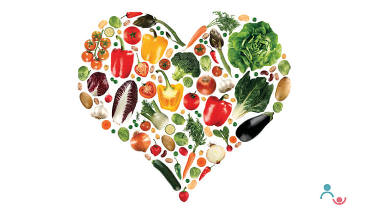
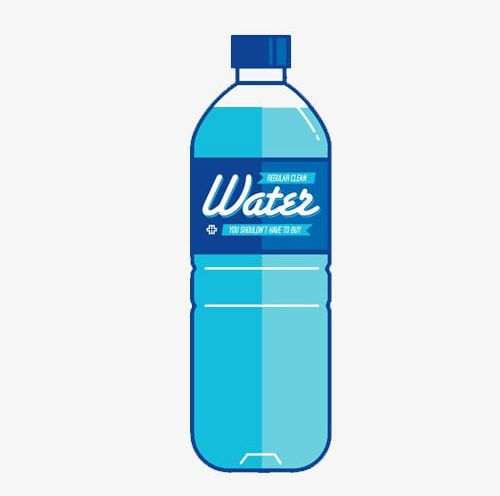
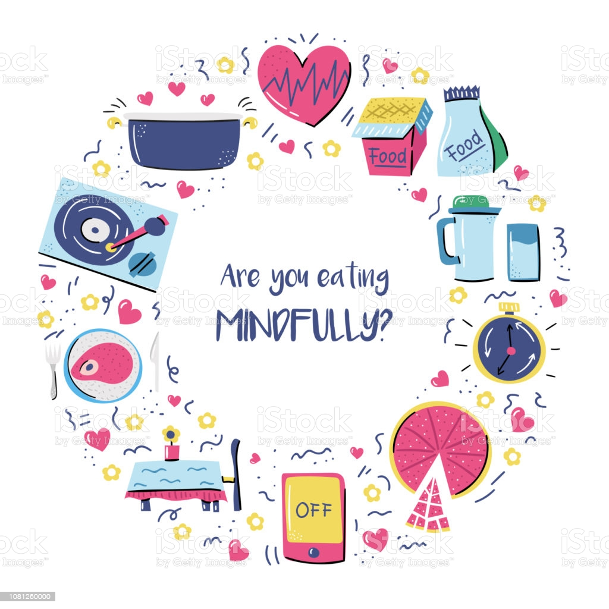
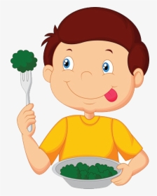
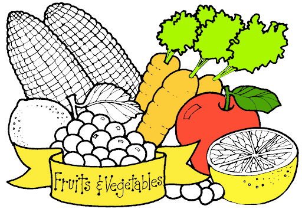

◈5 Good Eating Habits to Achieve Your Health Goals◈
Most of the time, health goals relate to our eating habits. When we want to lose our belly fat, we have to change the way we eat. Here are 5 good eating habits which will help us to achieve our health goals.
Write down good eating habits you want to develop in order to achieve your health goals We have goals for our relationships, careers, finance and also health. They are expressions of our inner desires or what we want from our lives. Often we write them down to make these goals more concrete and also as reminders to ourselves to keep moving towards our goals. When it comes to health, we often have fitness and food goals like losing weight, exercising regularly, eating healthier or making better food choices. Losing weight could take months. Exercising regularly could take years while eating healthier and making better food choices are hard to measure. Before we achieve these goals, we may feel discouraged and give up. To stay on track, we can break down these health goals into smaller and more realistic steps - steps that are easier to measure and track weekly or monthly so that we can see our progress and feel motivated. For instance, we could set a smaller goal to develop a healthy eating habit such as drinking water instead of sweetened drinks during lunch.
Here are 5 good eating habits which will definitely help us to achieve our food goals.
▶For those of us with diabetes, these healthy eating habits will also help us to control our blood sugar.
(1) Choose Water:
Set a goal to drink water instead of sugar-sweetened drinks. To make this more measurable, write down how often you will make this choice e.g. 5 times a week.

(2) Eat Slowly and Mindfully:
It takes about 20 minutes for your brain to send out signals that you are full. Eat slowly. Take the extra time to pay attention to what we are eating and how much. To make this more measurable, write down how often you will make an effort to take at least a half hour to finish your meal.

(3) Stick to One Serving:
For those of us who love having seconds, eating one serving will help us keep our calorie intake in check. Challenge yourself to stick to one serving and also standard portion sizes.

(4) Eat Fruit and Vegetables:
Set a goal to fill half your plate with fruit and vegetables at every meal. Fruit and vegetables are naturally low in saturated and trans fat, and rich in dietary fibre, vitamins and minerals. Or simply set a goal to use My Healthy Plate for all meals.

(5) Swop to Wholegrains:
Eating wholegrain foods such as brown rice, wholemeal bread and rolled oats can help reduce the risk of developing heart disease and diabetes. They can also help with weight management because they keep you feeling full longer and reduce the need for snacking. Set a goal to ask for brown rice and make it measurable e.g. ask for brown rice at least 3 times a week at lunch.

These 5 good eating habits take time to develop. Be patient. When we slip up, rather than give up, we should persevere. These changes, no matter how small, make a big difference to our health.